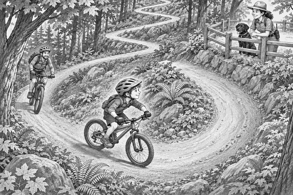

Sunlight shone through Eagle Wood.
Tom clicked his helmet strap.
Dad checked both bikes.
The tyres were firm.
The brakes worked.
The chains moved smoothly.
Today they would ride Eagle Trail.
Ranger Mia walked to a viewing point above the trail.
Scout padded beside her.
Dogs could not run on the bike track.
Scout would watch safely from behind the fence.
Tom and Dad began to climb.
The trail rose between tall trees.
Dry leaves crunched beneath their tyres.
Crickle. Crunch. Crickle.
Tom chose an easier gear.
His feet kept turning.
Soon, the trail crossed the hillside.
Then it made a very sharp turn.
It went back the other way.
Farther up, it turned again.
The whole path looked like a giant zigzag.
Trail fact: A turn that folds back across a hill is called a switchback. Switchbacks make a long zigzag, so riders do not have to climb straight up a very steep slope.
Tom reached the first switchback.
The inside edge looked like the shortest way.
He steered towards it.
But the corner became too tight.
Tom stopped before he wobbled.
He put one foot down.
Dad stopped behind him.
“That turn feels impossible,” said Tom.
Dad looked at the trail.
“You chose the shortest line,” he said.
“But the shortest line made the sharpest turn.”
They moved their bikes to the safe side.
Tom watched another rider climb the corner.
She began near the outside edge.
She looked around the bend.
Then she followed one wide, smooth curve.
Her pedals kept moving.
Up she went.
Ranger Mia waved from the viewing point.
Scout wagged his black tail.
Tom walked his bike back to the start mark.
He chose his easy gear before moving.
“Wide and smooth,” he said.
Tom began near the outside of the trail.
He did not stare at his front tyre.
He turned his head towards the path above.
His hands followed his eyes.
The front wheel drew a wide curve.
The back wheel followed.
Crickle. Roll. Crickle.
Tom passed the tightest part.
He kept pedalling.
One turn of the pedals.
Then another.
The bike rolled onto the upper trail.
Tom had climbed the impossible turn.
“Yes!” he called.
Scout answered with one happy bark.
Dad rode around the bend next.
They continued up the zigzag.
Near the top, the trail dipped gently.
Tom slowed down.
A narrow channel led away through the leaves.
Water fact: Trail builders add shallow dips and channels to guide rainwater away. This helps stop running water from washing soil down the trail.
Tom rolled through the dip.
Then he climbed the final slope.
Ranger Mia and Scout waited at the viewpoint.
Below them, Eagle Trail folded through the forest.
Tom could see every switchback.
“It only looked impossible from the inside,” he said.
“The wide line made room for the bike to turn.”
Dad smiled.
Scout pressed his nose through the fence.
Tom gave him a gentle pat.
The impossible turn had become Tom's favourite turn.
1. What shape did Eagle Trail make up the hill?
2. Where did Tom look during the turn?
3. Why did the trail have a shallow dip?